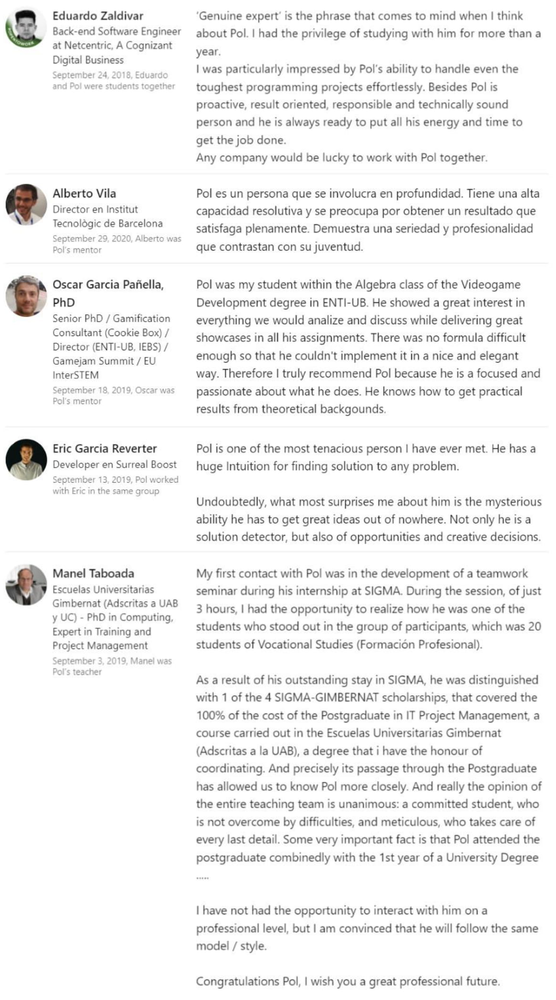

Summary
Hi, I'm Pol Surriel. Software developer with experience in IT Project Management. For me, a deep understanding of the culture, values, and infrastructure of an organization is essential to achieve efficient integration, productivity, and communication. I present good algorithmic problem solving, fast error diagnosis, a very high level of proactivity and enthusiasm, human contact, and ease of creating and conceptualizing complex software structures. Along my career I have been involved in many teams and production processes. My technical stack is strong in videogame development aspects such as complex AI behaviours, graphics programming and gameplay programming within procedural animations. My second strength is web development. I'm passionate about math and never stop learning.
Work Experience
Teacher of Unity, Kotlin, Android & Project mentor
At ITB I'm in charge of instructing my students in technologies such as Unity, Android Studio, basic programming (Kotlin) and P5js. I also am a mentor and tribunal member for projects that require a high mathematical load. One of my best contributions has been to modify the syllabus by adding content on the internal workings of game engines, advanced optimization techniques and implementation techniques for behavioral AIs.
Technologies used:
- Angular
- Unity, C#
- P5js
- Android Studio, Kotlin
- HTML/SASS
- TypeScript
- Firebase
- Github (gitflow)
Co-Founder, Junior producer & developer (C#, CGPROGRAM)
Along with this project I have been in charge of two different teams (formed by 8 and 5 people respectively). My development tasks were in graphics programming, gameplay programming and complex behavioral AIs. More of my main functions were the constant analysis of the production process to design of organizational changes, scope or dev.techniques. Therefore I am very familiar with leading agile ceremonies and proactively proposing changes to improve efficiency.
Achievements:
- Proactively negotiate with more than 10 external stakeholders, obtaining direct access to incubation programs and grants, mentorships from important companies like LinceWorks and under-NDA AAA company.
- Reduce the risk deduction of investment by generatic a healthy development process history and actively participating in the business plan development.
- Develop scalable, with quality code and documentation products.
- Recruit and lead a cross-functional high-performance team.
Technologies used:
- Unity C#
- CGPROGRAM
- GitHub (gitflow)
- JavaScript
- Spine2D
Java back-end developer (Intern)
Durgin my Internship at SIGMA I mainly worked in Java Backend projects adding new features or fixing bugs. It ended with a job offer, but I wanted to start my Engineering degree and IT Project Management Posgrade.
Technologies used:
- Java Maven
- JavaScript, JSPs
- HTML/CSS
- Bootstrap
- Angular 6
- jQuery
Front-end web developer (Intern)
During my stand on IndianWebs I used to directly talk with the clients, understanding the needs of their projects and discussed with the team how would be proceed with te developement of more than 15 web projects.
Technologies used:
- Wordpress
- JavaScript
- HTML/CSS
Projects and activity
An important part of my projects's code are under non discloursemnt agreements. Due to this, an part of my portfolio are explanations of important features or challenges that I have faced.
Megaman 2 Remake Vertical Slice (Phaser.js)
Project Management Sheets
link0.cv.psurriel.comGithub project
link1.cv.psurriel.comSYNAPSE: A Unity Project (C#, CGPROGRAM)
Gameplay main character
link2.cv.psurriel.comRendering feature: main character VFX and material rendering
link3.cv.psurriel.comRendering feature: Multiversal stains.
link4.cv.psurriel.comMultiplayer state sincronization (Post)
Twitter thead
link5.cv.psurriel.comC++ cloth simulation project (Project overview)
Twitter thead
link6.cv.psurriel.comPellets.io: A non-library JS online game (JS + Node.js)
Trailer
link7.cv.psurriel.comGameplay
link8.cv.psurriel.comEditor at 3DJuegos.com
Article example
link9.cv.psurriel.comGrestner waves formulas (Post)
Linkedin post
link10.cv.psurriel.comDigital Helheim: Linear Algebra and Geometry (Project)
Github project
link11.cv.psurriel.comCijestone.com (webpage)
Website
cijestone.comTestimonials
Skills & Tools
Frontend
-
Angular
-
TypeScript/JavaScript
-
Bootstrap
-
HTML/CSS/SASS
-
HTML/CSS/SASS/LESS
Game development
-
Unity
-
C++
-
Unreal
-
Unity Shaders
Others
- Gitflow
- Git
- Unit Testing
- Python
- Agile
- After Effects
- Photoshop
- Phaser
- SQL
- Firebase
- Storytelling
Education
-
Engineering in Digital Interactive ContentENTI (School of Interactive New Technologies), Universitat de Barcelona2018 - present (75% of credits)
-
Posgrade in IT Project ManagementGimbernat, Universitat Autonoma de BarcelonaGrade: 102018 - 2019
-
DAW - Web development, (CFGS/Vocational studies)Institut Jaume BalmesGrade: 82016 - 2018
-
SMX - Microcomputer systems, (CFGM/Vocational studies)Institut Jaume BalmesGrade: 82014 - 2016
Awards
-
Best student Scolarship 2018UAB/SIGMA: Helping Universities Suceed
-
Honors in Agile methodologiesENTI-UB
Language
- English (Professional)
- Spanish (Native)
- Catalonia (Native)
Interests
- Project management
- Soft skills
- Machine learning
- Physics simulations